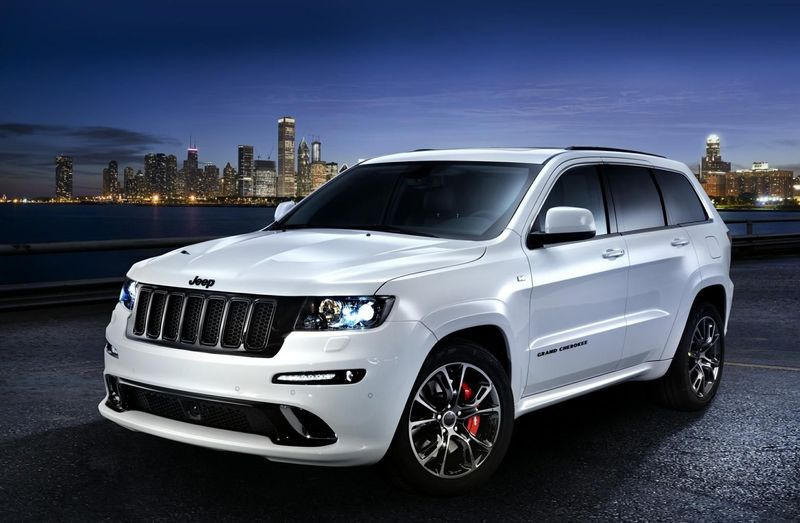
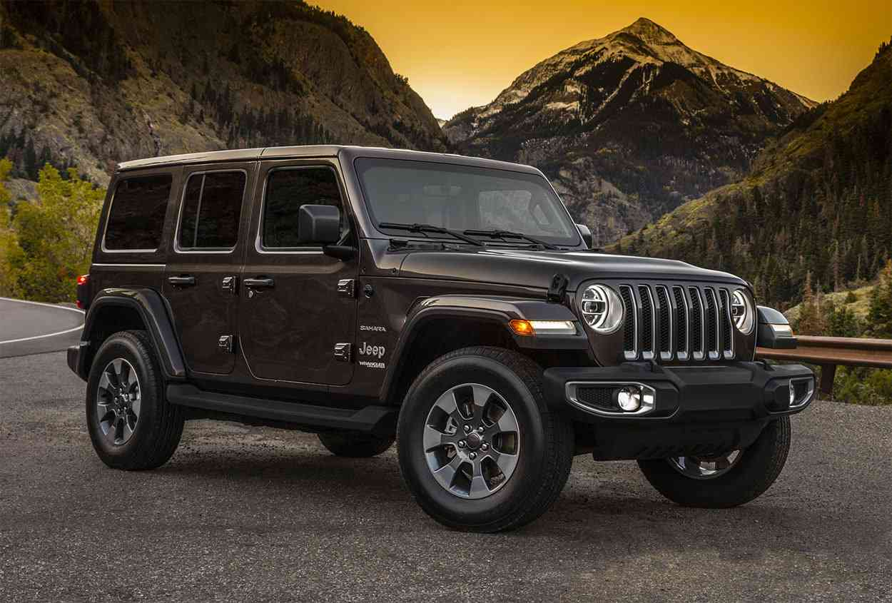

|  | تبلغ سعة محرك سيارة جيب جراند شيروكي 5.7 لتر (5700 سي سي)، وبقوة 360 حصان، وتحتوي السيارة على ناقل حركة ذو 8 سرعات مختلفة، تحتوي على 8 سليندرات، و32 صباب، تتسارع سيارة جراند شيروكي من صفر إلى مئة كيلو متر /ساعة خلال 8.7 ثانية ، والحد الأقصى للسرعة 225 كم/ساعة، وتحتوي على خاصية الدفع الرباعي للعجلات ؛لمعلومات اخري اضغط علي الصورة. |
|  | أعلنت اليوم المجموعة البافارية للسيارات وكيل بي ام دبليو الألمانية فى مصر عن تفاصيل وأسعار موديل X3 الجديد المجمع محليا والذى تم تقديمه رسمياً فى مصر بطرازين بسعر 1.375 مليون جنيه و1.650 مليون جنيه. الطراز الأول وهو X لاين يعتمد على محرك ذى ست سلندرات مع شاحني تيربو وتبلغ سعة المحرك 1998 سي سي وتصل قوته إلى 252 حصاناً وعزم أقصى يبلغ 350 نيوتن متر عند 1450-4000 دورة فى الدقيقة. ويتم نقل القوة للعجلات من خلال ناقل أوتوماتيكي لثماني سرعات، لتتسارع السيارة من البات وحتى 100 كم / ساعة خلال 6.4 ثانية بينما تصل سرعتها القصوى إلى 250 كم / ساعة. ويبلغ متوسط استهلاك السيارة للوقود حوالي 7.6 لتر بينما تصل سعة خزان الوقود 65 لتراً. |